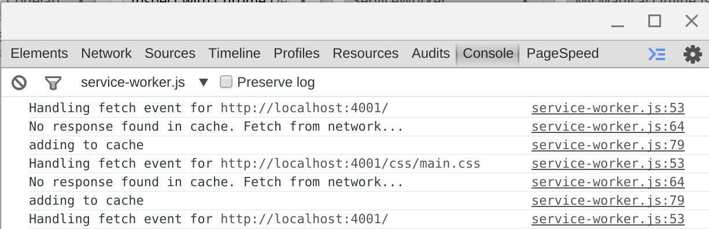
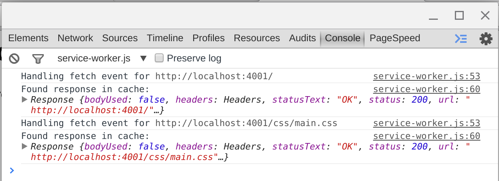
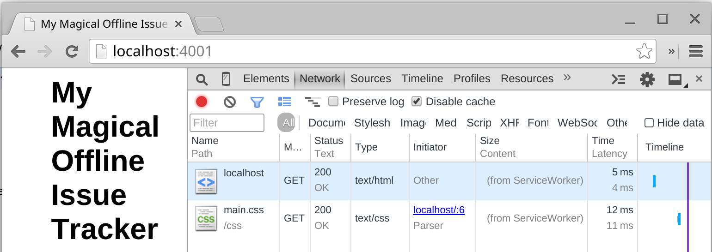
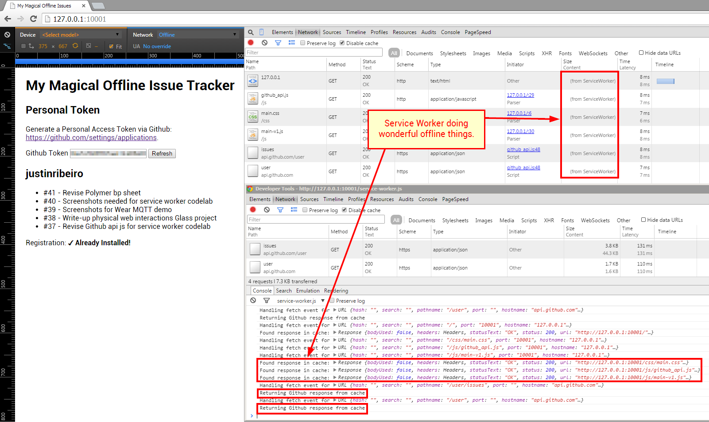

ServiceWorker Codelab
Getting started using ServiceWorker as seen at the February 2015 meetup at GDG Oakdale.
Welcome!
This codelab is designed to help you learn about using ServiceWorker. During this lab, we're going to build a basic issue tracking page that talks to the Github API to retrieve issues within one of your repos and then make that available offline with Service Worker.
Things we'll use
Documentation! You can never have enough of it and during this codelab you may find yourself looking for one more method to go that extra mile. Docs you may find useful include:
Getting started
First, let's start by creating a directory for our application:
➜ ~ mkdir my-magical-offline-tracker
➜ ~ cd my-magical-offline-tracker
Next, we need to create a few basic files:
➜ ~ touch index.html
➜ ~ touch css/main.css
➜ ~ touch service-worker.js
Now that we have a few files, let's add some basic markup to our html:
<html lang="en">
<head>
<meta charset="utf-8">
<meta name="viewport" content="width=device-width, initial-scale=1">
<title>My Magical Offline Issues</title>
<link rel="stylesheet" href="css/main.css">
</head>
<body>
<h1>My Magical Offline Issue Tracker</h1>
<div>
<ul id="issues"></ul>
</div>
<div id="service-worker-log">
<p>Registration: <strong id="service-worker-registration"></strong></p>
</div>
<script>
// TO IMPLEMENT: Service Worker Registration
</script>
</body>
</html>
Basic page markup with some placeholders for things we'll be adding. You'll notice we have a script tag with a "TO IMPLEMENT: Service Worker Registration" comment, so let's start by adding a service worker registration. We can add this to our script tag:
if ('serviceWorker' in navigator) {
navigator.serviceWorker.register('./service-worker.js', {scope: './'}).then(function(registration) {
document.querySelector('#service-worker-registration').textContent = '✓ Success';
}).catch(function(error) {
document.querySelector('#service-worker-registration').textContent = '✘ Error:' + error;
});
} else {
document.querySelector('#service-worker-registration').textContent = '✘ Unavailable!'
}
If we go ahead an start a basic http server (we'll show you how to do this with python for this purpose, but you can use any local http server you like):
➜ ~ python -m SimpleHTTPServer 4001
Tip: ServiceWorkers only work on HTTPS, but http://localhost is whitelisted for development purposes.
And browse to http://localhost:4001/, you should see:

Look good? Great! What just happened?
if ('serviceWorker' in navigator)checks to see if we have serviceWorker availablenavigator.serviceWorker.register()defines which script is going to handle our worker operatons and in what context (in this case, our context says registration applies to our current directory and everything underneath)navigator.serviceWorker.register()returns a promise, so we use.then()and.catch()to handle when that promise returns.
Note, our service-worker.js isn't doing anything yet, but we can still verify that it's been registered by visiting chrome://inspect/#service-workers. There'll you will see:
Stuck? Check the step-01 folder for a solution.
More events please
To really understand the ServiceWorker under the hood, we have to step back and do a little more than just registration.
Let's start by modifying our index.html and add a spot for state:
<html lang="en">
<head>
<meta charset="utf-8">
<meta name="viewport" content="width=device-width, initial-scale=1">
<title>My Magical Offline Issues</title>
<link rel="stylesheet" href="css/main.css">
</head>
<body>
<h1>My Magical Offline Issue Tracker</h1>
<div>
<ul id="issues"></ul>
</div>
<div id="service-worker-log">
<p>Registration: <strong id="service-worker-registration"></strong></p>
<p>Registration State: <strong id="service-worker-registration-state"></strong></p>
</div>
<script>
if ('serviceWorker' in navigator) {
navigator.serviceWorker.register('./service-worker.js', {scope: './'}).then(function(registration) {
document.querySelector('#service-worker-registration').textContent = '✓ Success';
}).catch(function(error) {
document.querySelector('#service-worker-registration').textContent = '✘ Error:' + error;
});
} else {
document.querySelector('#service-worker-registration').textContent = '✘ Unavailable!'
}
</script>
</body>
</html>
Now, let's modified our Service Worker registration:
if ('serviceWorker' in navigator) {
navigator.serviceWorker.register('/service-worker.js', {scope: '/'}).then(function(registration) {
document.querySelector('#service-worker-registration').textContent = '✓ Success';
var swStateNode = document.querySelector('#service-worker-registration-state');
if (registration.installing) {
swStateNode.textContent = 'Installing...';
} else if (registration.waiting) {
swStateNode.textContent = 'Waiting...';
} else if (registration.active) {
swStateNode.textContent = '✓ Active!';
}
}).catch(function(error) {
document.querySelector('#service-worker-registration').textContent = '✘ Error:' + error;
});
} else {
document.querySelector('#service-worker-registration').textContent = '✘ Unavailable!'
}
Great, we've added the ability to see which state our service worker is in. Now let's modify our service-worker.js to give us some insight on the Service Worker event side:
self.addEventListener('install', function(event) {
console.log('Install event:', event);
});
self.addEventListener('activate', function(event) {
console.log('Activate event:', event);
});
What exactly do these events do?
self.addEventListener('install', ...)- Fired once on first register of this version of script, install is a good place to initialize your caches and prefetch data (you should be wrapping that work in a Promise, which we'll see in a bit).self.addEventListener('activate', ...)- Fired once on first register of this version of script, activate is a good place to clean up stale data from old versions of the script. Note, activate is not fired each time a ServiceWorker is revived from termination (we can use the onfetch or onmessage event listeners for such work)
At this point, we also need to understand the life cycle of how this updated service-worker.js works:
- When we browse to our site, the service worker script is downloaded and compared to what the browser currently has. The browser compares bytes; a difference means that the browser will consider this new downloaded version "new".
- The new service worker is started and
self.addEventListener('install', ...)is fired. - The old service worker will still be in control and the new service worker will be in the "waiting" state.
- Once all pages or tabs using the old service worker are closed, the new service worker takes over.
- When the new service work takes control,
self.addEventListener('activate', ...)will fire.
What does all this mean? We have to follow a procedure to test this new service worker.
- Open a new tab for
http://localhost:4001. - Close any and all pages or tabs that were previously running
http://localhost:4001. - Reload the tab opened in bullet point #1 above and you should see:

If we go to chrome://inspect/#service-workers and click "inspect" under our serviceWorker, we'll see our console.log messages:
Tip: In practice, sometimes things do not go so smoothly. When that happens, you can use chrome://serviceworker-internals/ to do a little more, including unregistering your service worker and see Install/Running status. Note, this chrome page may go away in the future, but for now it can be very useful.
Let's go offline
We now know a little bit about what kind of events we have to work with, it's time to write some code and make our index.html page be available offline.
Cache our index.html with some css
Chances are, our page will have some other resources as we build along. So let's slightly modifiy our index.html to add a wrapper div:
[...]
<div class="wrapper">
<h1>My Magical Offline Issue Tracker</h1>
<div>
<ul id="issues"></ul>
</div>
<div id="service-worker-log">
<p>Registration: <strong id="service-worker-registration"></strong></p>
</div>
</div>
[...]
And let's throw some style into our main.css (feel free to be as creative as you like):
html,body {
font-family: sans-serif;
font-size: 1em;
}
.wrapper {
width: 50%;
margin: auto;
}
Now how do we make this offline? We'll need a cache.
While ServiceWorker comes with a Cache API, we have a polyfill that's going to bridge the gap for us for things that aren't quite there yet. You can find it in the resources directory for this codelab and we're just going to add it to the root of our project. Once added, we're going to import the script in our service-worker.js file as such:
importScripts('serviceworker-cache-polyfill.js');
Fun fact: See this commit to see when the polyfill was greatly reduced in size due to native implementation. Whoo hoo!
While we'll only be using one cache, it's good practice to make sure we version. So let's add a few variables to our service-worker.js that we can use later:
importScripts('serviceworker-cache-polyfill.js');
var CACHE_VERSION = 1;
var CURRENT_CACHES = {
mycache: 'my-cache-v-' + CACHE_VERSION
};
Tip: Want to force the pages in the cache to purge and update? Increment the CACHE_VERSION (treat it like a constant, don't change the value in an event handler).
Now we can change the way our install event handler operates by adding some urls to prefetch as adding them to the cache:
self.addEventListener('install', function(event) {
var urlsToCache = [
'/index.html',
'/css/main.css'
];
event.waitUntil(
caches.open(CURRENT_CACHES['mycache']).then(function(cache) {
cache.addAll(urlsToCache.map(function(urlToCache) {
return new Request(urlToCache, {mode: 'no-cors'});
})).then(function() {
console.log('All urls have been fetched and cached.');
});
}).catch(function(error) {
console.error('Cache failed:', error);
})
);
});
Let's walk through what's happening:
- We define a set of urls that we want to cache in the array
urlsToCache event.waitUntiltakes a promise fromcaches.openand uses that to understand how long our install is taking and whether we've succeededcaches.open(CURRENT_CACHES['mycache'])opens the cache we defined earliercache.addAll(urlsToPrefetch.map(function(urlToPrefetch) { ... }adds all the urls we want to cachereturn new Request(urlToCache, {mode: 'no-cors'});runs our request, making note to usemode: 'no-cors'}in case we may run into a server that may not support CORS (ideally, you're managing this is, but see SW Spec - CORS for more information)
Now let's change out our activate event handler:
self.addEventListener('activate', function(event) {
// Delete all caches that aren't named in CURRENT_CACHES.
var expectedCacheNames = Object.keys(CURRENT_CACHES).map(function(key) {
return CURRENT_CACHES[key];
});
event.waitUntil(
caches.keys().then(function(cacheNames) {
return Promise.all(
cacheNames.map(function(cacheName) {
if (expectedCacheNames.indexOf(cacheName) == -1) {
console.log('Deleted out of date cache:', cacheName);
return caches.delete(cacheName);
}
})
);
})
);
});
As you can see, it looks similar to our install (we're again using event.waitUntil and waiting for a promise to return) and now we're going to delete our stale cache's via caches.delete(cacheName).
Now, let's add a method to handle our fetch event handler. After a refresh or a navigation event, our service worker will begin receiving fetch events, but we need to handle them:
self.addEventListener('fetch', function(event) {
console.log('Fetch event:', event.request.url);
event.respondWith(
caches.match(event.request).then(function(response) {
if (response) {
console.log('Found in cache:', response);
return response;
}
console.log('No response found in cache. Fetch from network...');
var fetchRequest = event.request.clone();
return fetch(fetchRequest).then(
function(response) {
if(!response || response.status !== 200 || response.type !== 'basic') {
return response;
}
var responseToCache = response.clone();
caches.open(CURRENT_CACHES['mycache']).then(function(cache) {
var cacheRequest = event.request.clone();
console.log("Add to cache:" + cacheRequest);
cache.put(cacheRequest, responseToCache);
});
return response;
});
})
);
});
Let's walk through what's happening:
event.respondWithis going to take over the fetch from the browser and respond how we want. Not calling it would result in the browser doing what it normally would do (check browser cache, fetch resource).caches.matchis going to check out cache to see if we have that resource and return a promise.- If that response is found, we're going to return it from the cache with
return response; - If we don't have it in the cache, we need to fetch it from the network. To do so, we clone our fetch request (
var fetchRequest = event.request.clone();) and then run our fetch viareturn fetch(fetchRequest).then(...)
Why the clone of request? As per Matt Gaunt's excellent introduction article on Service Workers: "A request is a stream and can only be consumed once. Since we are consuming this once by cache and once by the browser for fetch, we need to clone the response"
- Within the return promise from our fetch, We use
cache.put()to add to our cache and then return the response.
Now let's modifiy our index.html to make our Service Worker handle a little better:
function waitUntilInstalled(registration) {
return new Promise(function(resolve, reject) {
if (registration.installing) {
document.querySelector('#service-worker-registration').textContent = 'Installing...';
registration.installing.addEventListener('statechange', function(e) {
if (e.target.state == 'installed') {
document.querySelector('#service-worker-registration').textContent = '✓ Success';
resolve();
} else if(e.target.state == 'redundant') {
document.querySelector('#service-worker-registration').textContent = '✘ Redundent';
reject();
}
});
} else {
document.querySelector('#service-worker-registration').textContent = '✓ Already Installed!';
resolve();
}
});
}
if ('serviceWorker' in navigator) {
navigator.serviceWorker.register('/service-worker.js', {scope: '/'})
.then(waitUntilInstalled)
.catch(function(error) {
document.querySelector('#service-worker-registration').textContent = '✘ Error:' + error;
});
} else {
document.querySelector('#service-worker-registration').textContent = '✘ Unavailable!'
}
With all the pieces in place, now what? First, we need to make sure our old service worker has been garbage collected. To do so, we close out any existing tabs that might be using that service worker. This allows our updated service worker to take over once the page is visited again. We now see that our service worker is caching resources that we've specified:
On a reload, we can see that our page is now serving resources from the cache:
This is also confirmed in DevTools proper by looking at the network tab (notice the resources say "from service worker"):
The final test is to stop your local development http server (ctrl-c for those of you using the python line above). What occurs is something fantastic: the page serves as normal. Disable your network. Use the offline mode in DevTools. The result is the same: the page continues to work. Service Worker for the win!
Different kinds of cache's. The cache outlined above is a basic, single cache. For more cache types and approaches, see Chrome's Service Worker Recipes @ Github
Actually building the issue tracker
Now that we have a some understanding of how Service Worker works, let's build our offline issue tracker.
First, we'll need a spot to run some of our code, so let's create a main.js file:
➜ ~ touch js/main.js
Second, you'll need to grab the github_api.js from the resources directory and add it to your projects' js folder.
The github_api.js is our slimmed down library that gives us two methods that we can use:
/**
*
* Get who I am
*
* @param {String} token
* @return {Promise}
*/
GitHub.getMe(token)
/**
*
* Get my assigned issues
*
* @param {String} token
* @return {Promise}
*/
GitHub.getMyIssues(token)
Some important things to note:
- You'll need to generate a personal access token from your Github user via the applications page.
- The GitHub.getMyIssues method will only return tickets you assigned to. If you want to expand that, you can modify the method with parameters via the Github v3 API documentation (see List Issues)
- Remember, our Github library returns Promises.
Now let's update our index.html file so we can use our new files:
[...]
<body>
<div class="wrapper">
<h1>My Magical Offline Issue Tracker</h1>
<div>
<ul id="issues"></ul>
</div>
<div id="service-worker-log">
<p>Registration: <strong id="service-worker-registration"></strong></p>
</div>
</div>
<script src="js/github_api.js"></script>
<script src="js/main.js"></script>
<script>
[...service worker fire up...]
</script>
</body>
[...]
Since we're going to need those files to work offline, Let's also update our list of cache file in our service-worker.js:
[...]
self.addEventListener('install', function(event) {
var urlsToCache = [
'/index.html',
'/css/main.css',
'/js/github_api.js',
'/js/main.js'
];
[...]
Great. Now we need a way to put our access token in so that we can utilize the API. We don't want to store it in our code (that would be bad), but we can add a simple form field and use localStorage to store that value.
Update index.html:
[...]
<h1>My Magical Offline Issue Tracker</h1>
<h2>Personal Token</h2>
<p>Generate a Personal Access Token via Github: <a href="https://github.com/settings/applications">https://github.com/settings/applications</a>.</p>
<form>
<label for="githubToken">Github Token</label>
<input id="githubToken" type="text">
<button id="save" type="button">Save</button>
</form>
<h2 id="username"></h2>
[...]
Update main.js:
var username = document.getElementById('username');
var issueList = document.getElementById('issues');
var githubToken = document.getElementById('githubToken');
var saveButton = document.getElementById('save');
saveButton.addEventListener('click', function() {
localStorage.setItem('githubToken', githubToken.value);
});
Now that we have a token to use, let's implement a function to get our assigned issues and some basic user info in main.js:
var refreshIssues = function(cache) {
var githubToken = localStorage.getItem('githubToken');
while (issueList.firstChild) {
issueList.removeChild(issueList.firstChild);
}
GitHub.getMyIssues(githubToken, cache).then(function (issues) {
(issues).forEach(function(issue) {
var li = document.createElement('li');
li.innerText = '#' + issue.number + ' - ' + issue.title;
issueList.appendChild(li);
});
});
GitHub.getMe(githubToken, cache).then(function (me) {
username.textContent = me.login;
});
};
You'll note that we've decided to have our function take a parameter called cache. The cache parameter is a boolean which will tell us when Service Worker should serve results from the cache. How does that work?
If we take a peek at the github_api.js source, the method _request() has a statement which adds a header to our request when true:
if (cache) {
request.setRequestHeader('X-Cache', 'x-cache/only');
}
This little piece of code will allow us to update our Service Worker to serve from the cache first and then fallback to the network. This approach is outlined in Google Chrome Developer Advocate Jake Archibald's "cache then network" approach, and allows us to not wait for the network (which in poor network conditions, could be terribly slow).
To use this approach, let's add a couple of actions to our main.js first:
- When a token is saved, load the API requests and cache them with Service Worker
- On subsequent reload of the page, if we have a token, load from the cache first
With those actions, let's first update our save event listener in main.js:
saveButton.addEventListener('click', function() {
localStorage.setItem('githubToken', githubToken.value);
refreshIssues(false);
saveButton.textContent = 'Refresh';
});
Here we pass false, as we don't want to serve from the cache.
Next, let's add a simple token check and pull from the cache:
var myToken = localStorage.getItem('githubToken');
if (myToken !== null) {
saveButton.textContent = 'Refresh';
refreshIssues(true);
githubToken.value = myToken;
}
Now that we have the pieces, we can start to work on our service-worker.js. First, let's add a cache for just the github requests:
var CURRENT_CACHES = {
mycache: 'my-cache-v-' + CACHE_VERSION,
github: 'my-github-v-' + CACHE_VERSION
};
Now, we're going to modify our self.addEventListener('fetch', ...) to handle calls to Github differently:
self.addEventListener('fetch', function(event) {
var requestURL = new URL(event.request.url);
if (requestURL.hostname == 'api.github.com') {
event.respondWith(githubApiResponse(event.request));
} else {
event.respondWith(
caches.match(event.request).then(function(response) {
if (response) {
console.log('Found response in cache:', response);
return response;
}
console.log('No response found in cache. Fetch from network...');
var fetchRequest = event.request.clone();
return fetch(fetchRequest).then(
function(response) {
if(!response || response.status !== 200 || response.type !== 'basic') {
return response;
}
var responseToCache = response.clone();
caches.open(CURRENT_CACHES['mycache']).then(function(cache) {
var cacheRequest = event.request.clone();
console.log("adding to cache");
cache.put(cacheRequest, responseToCache);
});
return response;
});
})
);
}
});
You can see that we're still doing the normal fetch for our other resources, but that we've added a check if (requestURL.hostname == 'api.github.com') and call a new function githubApiResponse(). What does that function need to do?
- Needs to check if we need to return from the cache
- If not the cache, pull from the network and update the cache
Knowing that we add an X-Cache header as needed in the Github lib we're using, we can now write our githubApiResponse() as such:
function githubApiResponse(request) {
if (request.headers.get('X-Cache') !== null && request.headers.get('X-Cache') == 'x-cache/only') {
console.log('Returning Github response from cache');
return caches.match(request);
}
else {
return fetch(request.clone()).then(function(response) {
return caches.open(CURRENT_CACHES['github']).then(function(cache) {
// We're a stream: if you don't clone, bad things happen
var cacheRequest = request.clone();
var cacheResponse = response.clone();
cache.put(cacheRequest, cacheResponse).then(function() {
console.log("Adding new Github response to cache", cacheRequest, cacheResponse);
}, function() {
console.log("Something went horribly wrong");
});
return response;
});
});
}
}
Walking through the code, we see that:
- If we have the
X-Cacheheader, we return the matching request from the cache - If we don't have
X-Cacheheader, run our fetch and cache the result inCURRENT_CACHES['github']
Once we've put these pieces together, we can run our new app in Chrome and once we've added and saved a token for the first time, we can go offline to see the entire change take over:
Stuck? Check the step-04 folder for a solution.
Success!
Congratulations! You have completed this codelab! Have some extra time? Things for consideration:
- Make it look fancy with your UI libs and css of choice
- Write a smarter Service Worker (make that cache perform even better)
- Add a timer for updates to assigned issues